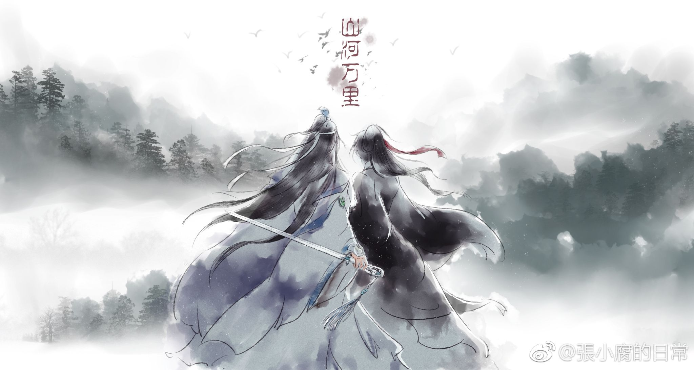

1) Mo Dao Zu Shi
Meskipun orang di balik gelar itu telah meninggal selama 13 tahun, penyebutan Patriark Yiling saja menyebabkan kengerian di antara mereka yang mendengarnya. Sebagai seorang praktisi kultivasi iblis, ia dikatakan telah membangkitkan orang mati untuk melawan sekte kultivasi besar.
Nama asli dari Patriarch of Yiling adalah Wei Ying, kehormatan Wuxian, dan dia kembali dari kematian dipanggil ke tubuh orang gila!